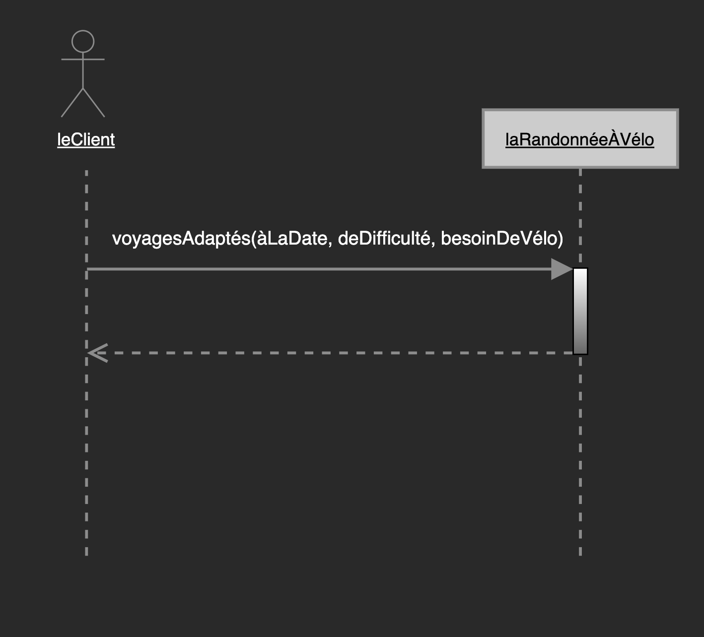
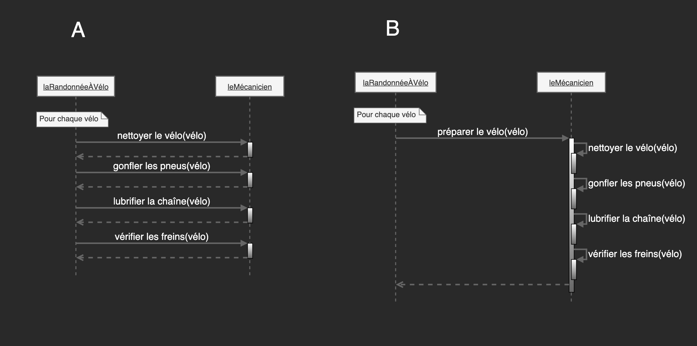
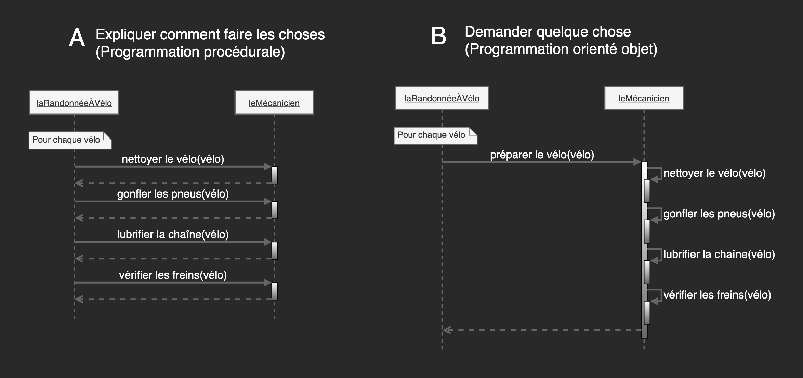
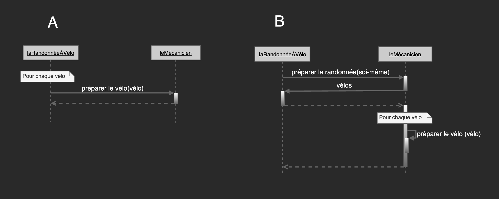
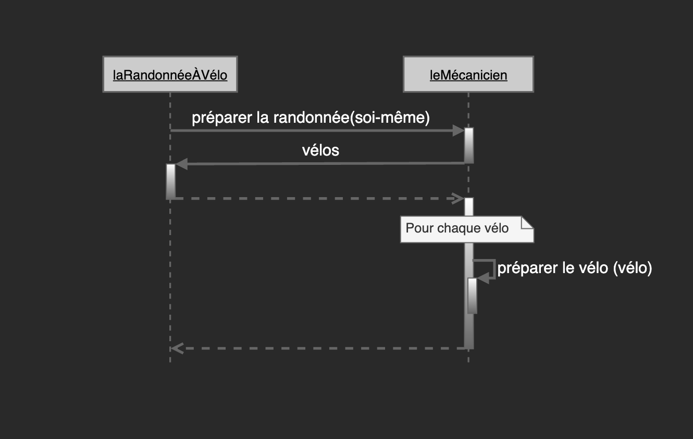

Eric Demers, Michel Gagnon et Lévis Thériault
«Vous n'envoyez pas des messages parce que vous avez des objets, vous avez des objets parce que vous envoyez des messages»
Source: Sandi Metz, Practical object-oriented design in Ruby
Signification des symboles
Mise en contexte
Un client fait appel à un service de planification d'expéditions pour randonnée à vélo.
Prononcez-vous:
Préférez-vous l'option A ou l'option B?
Vers une cohésion plus forte et un plus faible couplage
Demander quelque chose plutôt que d'expliquer comment faire les choses.
Prononcez-vous:
Préférez-vous l'option A ou l'option B?
Rechercher l'indépendance du contexte
L'objet laRandonnéeÀVélo ne se soucie pas de l'objet leMécanicien et il n'a aucune idée de ce que le mécanicien fera. La confiance aveugle permet aux objets de collaborer sans être totalement dépendant d'un contexte.
